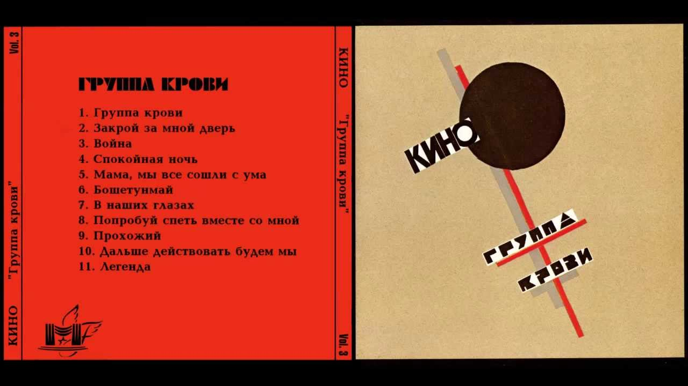

"Кино - Группа крови"
Шестой студийный альбом советской рок-группы «Кино», вышедший 5 января 1988 года. Получил широкую известность как в СССР, так и за рубежом. Выход альбома принёс группе быстрый рост известности, многие песни стали одними из самых узнаваемых в творчестве группы.